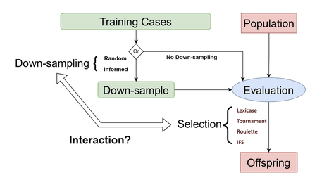

PublicationsPublished under Ryan Bahlous-Boldi and Ryan Boldi * = equal contribution | Highlighted papers represent key contributions |
Pre-prints |

|
Vector Policy Optimization: Training for Diversity Improves Test-Time Search
Ryan Bahlous-Boldi, Isha Puri, Idan Shenfeld, Akarsh Kumar, Mehul Damani, Sebastian Risi, Omar Khattab, Zhang-Wei Hong, Pulkit Agrawal arXiv preprint, 2026 PDF / Code / Website TL;DR: We propose Vector Policy Optimization (VPO), a drop-in replacement for the GRPO advantage estimator that trains LLMs to produce diverse sets of solutions specialized to different trade-offs in a vector-valued reward space, improving test-time search (pass@k, best@k) and unlocking problems evolutionary search cannot otherwise solve. |
Publications |

|
Dominated Novelty Search: Rethinking Local Competition in Quality-Diversity
Ryan Bahlous-Boldi*, Maxence Faldor*, Luca Grillotti, Hannah Janmohamed, Lisa Coiffard, Lee Spector, Antoine Cully GECCO 2025, 2025 PDF / DOI TL;DR: We propose a new class of quality-diversity algorithms that are simply genetic algorithms with fitness augmentations. |

|
Pareto Optimal Learning from Preferences with Hidden Context
Ryan Bahlous-Boldi, Li Ding, Lee Spector, and Scott Niekum Reinforcement Learning Journal, vol. 6 (RLC 2025) & Pluralistic Alignment Workshop @ NeurIPS 2024, 2025 PDF / RLJ TL;DR: We frame reward function inference from diverse groups of people as a multi-objective optimization problem. |

|
Solving Deceptive Problems Without Explicit Diversity Maintenance
Ryan Boldi, Li Ding, Lee Spector Agent Learning in Open Endedness @ NeurIPS 2023 & GECCO '24 Companion, 2024 PDF / DOI TL;DR: We present an approach that uses lexicase selection to solve deceptive problems by optimizing a series of defined objectives, implicitly maintaining population diversity. |

|
Informed Down-Sampled Lexicase Selection: Identifying productive training cases for efficient problem solving
Ryan Boldi*, Martin Briesch*, Dominik Sobania, Alexander Lalejini, Thomas Helmuth, Franz Rothlauf, Charles Ofria, Lee Spector Evolutionary Computation Journal - MIT Press, 2024 PDF / DOI TL;DR: We develop methods to identify the most productive training cases for lexicase selection, improving computational efficiency while maintaining solution quality. |
|
 |
Untangling the Effects of Down-Sampling and Selection in Genetic Programming
Ryan Boldi, Ashley Bao, Martin Briesch, Thomas Helmuth, Dominik Sobania, Lee Spector, Alexander Lalejini ALIFE 2024: the 2024 Conference on Artificial Life, 2024 PDF / DOI TL;DR: We disentangle the effects of down-sampling from selection pressure in genetic programming systems. |
|
Particularity
Lee Spector, Li Ding, Ryan Boldi Genetic Programming Theory and Practice XX, Springer, 2024 Preprint / DOI TL;DR: We explore the concept of particularity in genetic programming and its implications for problem-solving. |
Selected Workshop Papers |
|
[No Image]
|
The environmental discontinuity hypothesis for down-sampled lexicase selection
Ryan Boldi, Thomas Helmuth, Lee Spector The 2022 Conference on Artificial Life - Why it Didn't Work-Shop (ALIFE '22), 2022 TL;DR: We propose the environmental discontinuity hypothesis to explain the effectiveness of down-sampled lexicase selection. |
|
[No Image]
|
Lexicase selection at scale
Li Ding, Ryan Boldi, Thomas Helmuth, Lee Spector Proceedings of the Genetic and Evolutionary Computation Conference Companion (GECCO '22), 2022 PDF / DOI TL;DR: We demonstrate the scalability of lexicase selection to large-scale evolutionary computation problems. |
Selected Posters |
|
Generating Diverse Critics for Conditioned Policy Distillation
Ryan Boldi, Matthew Fontaine, Sumeet Batra, Gaurav Sukhatme, Stefanos Nikolaidis Proceedings of the Genetic and Evolutionary Computation Conference Companion (GECCO '24), 2024 DOI TL;DR: We present methods for generating diverse critics through conditioned policy distillation. |
|
|
[No Image]
|
A static analysis of informed down-samples
Ryan Boldi, Alexander Lalejini, Thomas Helmuth, Lee Spector Proceedings of the Genetic and Evolutionary Computation Conference Companion (GECCO '23), 2023 PDF / DOI TL;DR: We provide a static analysis framework for understanding informed down-sampling in evolutionary algorithms. |
Other Pre-prints |
|
[No Image]
|
Improving Recommendation System Serendipity Through Lexicase Selection
Ryan Boldi*, Aadam Lokhandwala*, Edward Annatone, Yuval Schechter, Alexander Lavrenenko, Cooper Sigrist arXiv preprint, 2023 TL;DR: We apply lexicase selection to improve serendipity in recommendation systems. |
|
© 2025 Ryan Bahlous-Boldi |